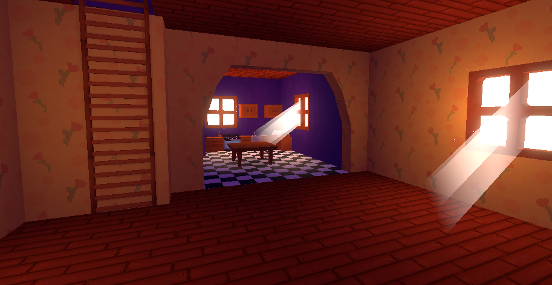
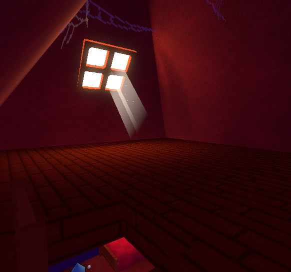
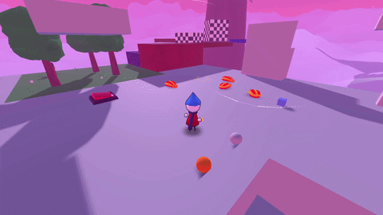
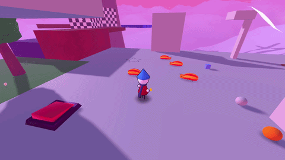
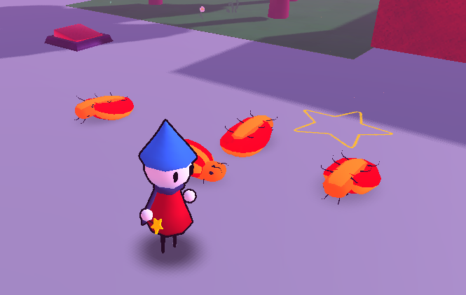
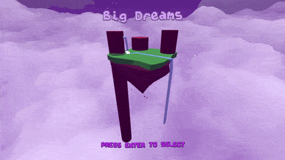
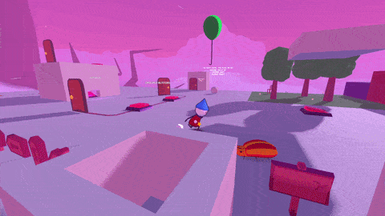
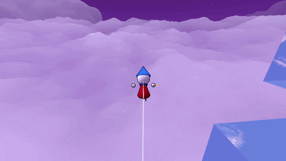
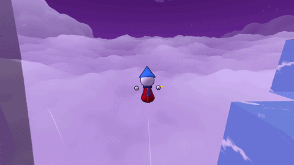
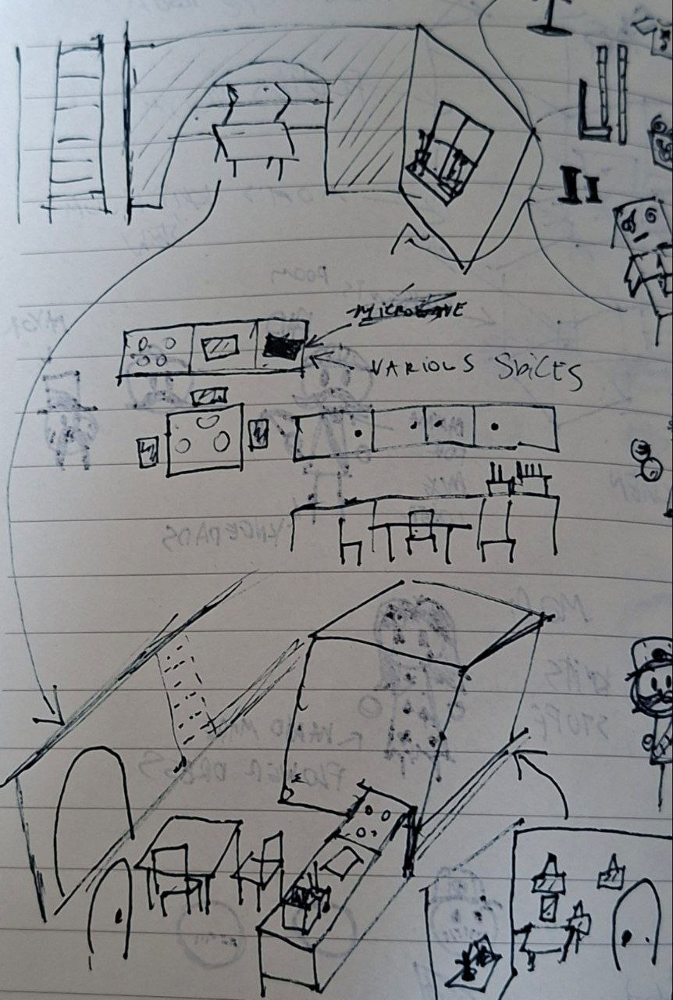

I'm back yet again for newsletter number 8!
This month I was very busy with certain things however I still made some new stuff that I can show. Let's get into it!!
This month I've been slowly working away at Flute's house which is on Maple Isle and it's where the story of the demo left off.

Screenshot from downstairs
There's still a lot of assets that need to be made for it, however the layout will (probably) stay like this
This image above is of the kitchen and the undecorated sewing room which are downstairs.

Screenshot from the attic
This is the attic where later you will be able to find a telescope to gaze at the stars
Rubber Bugs are little bugs that you can bounce on.

Bouncing on Rugs
Rugs (my awesome shortened version) also naturally walk around a set path.

Rugs wandering around
You can also attack the Rugs and they will flip over for a few seconds.

Rugs flipped over after being attacked
As said in the previous newsletter, the current level select was a placeholder and right now I'm working on the real level select.

Level Select Prototype in action
It's not fully functional yet but hopefully you see my vision with this prototype of it.
Balloons are new props that you can use to reach some high spots

Balloons in action
Flute can grab the balloon and then move around or jump off of it any time. Originally they were supposed to act pretty much like a bounce pad but I think this is more interesting.
Ledge Grab
I've modified some of the stuff related to the ledge grab to make it more consistent and less buggy.
One of the examples is that previously there were edge cases where you could grab onto any point of an angled box (which is not how it's supposed to work).
Cloud Fog
Cloud Fog is an effect that I've been experimenting with to make sure you can't see the void below the clouds.

Falling with NO fog

Falling WITH fog
As you can see, when compared the cloud fog hides the fact that there is nothing below the clouds.
It's still something I will keep tweaking since it doesn't work properly all of the time.
And that's it for now! Maple Isle remains as the main focus for me right now.
Hopefully I can finish up the intro/house section of it by next month so I can move onto the objectives (some fun stuff planned :D)
Until next time, bye bye!!!

Here's some sketches I made for Flute's house